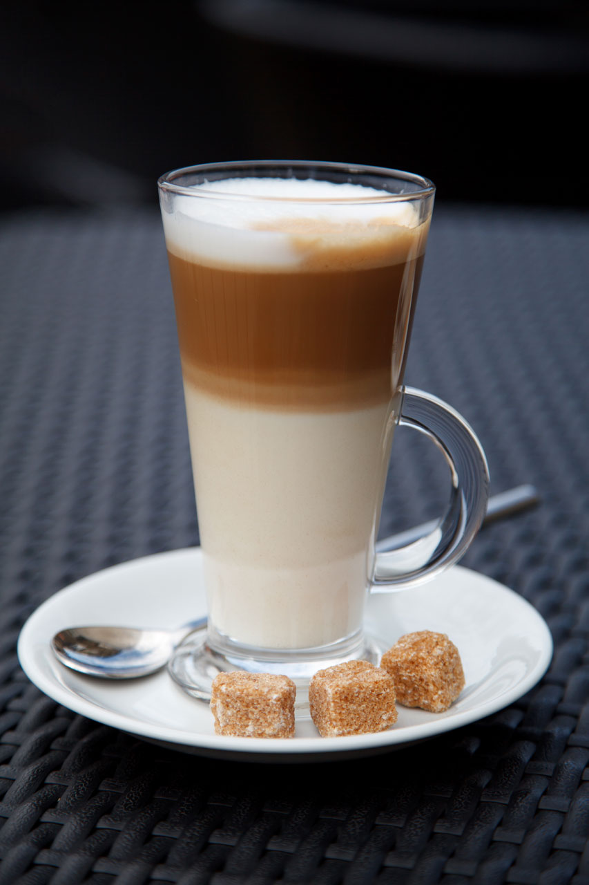

寄り道という、ちいさな贅沢
寄り道は、予定にない、ほんの少しの回り道。そのちいさな時間が、一日をやわらかくしてくれることがあります。
stop 01
ふらりと
予定の合間や帰り道、散歩の途中。思い立ったときに、気軽に立ち寄れる場所でありたいと思っています。かまえず、身ひとつでどうぞ。

stop 02
ゆっくり
一杯を前に、少しだけ時間をゆっくりに。湯気やかおりを感じながら、ぼんやりしたり、本を開いたり。そんな時間をお過ごしください。
stop 03
また、ふらりと
何度でも寄り道したくなる場所でありたい。そう願っています。次の道草のときも、思い出していただけたらうれしいです。

stop 04